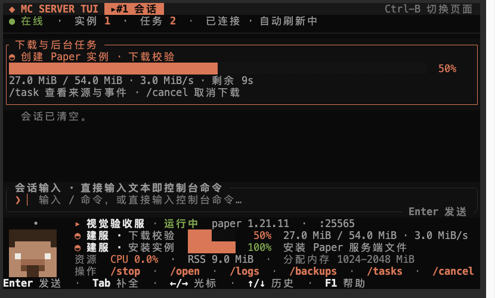
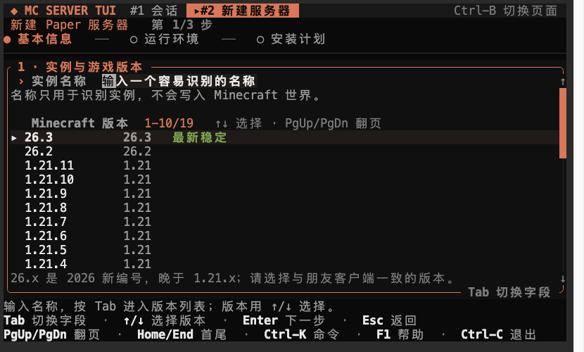
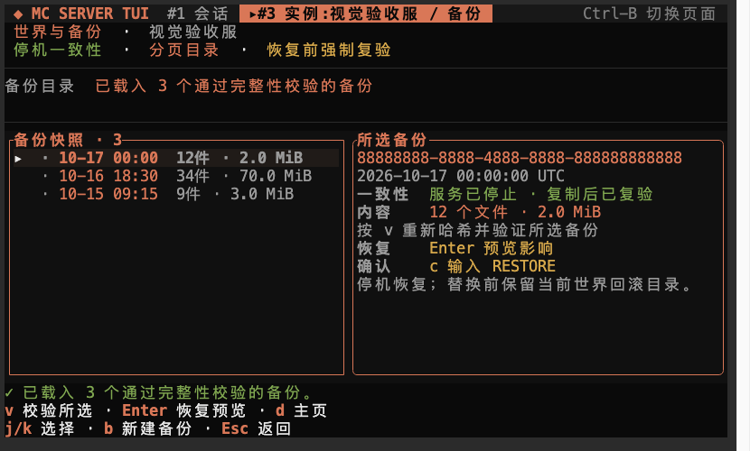
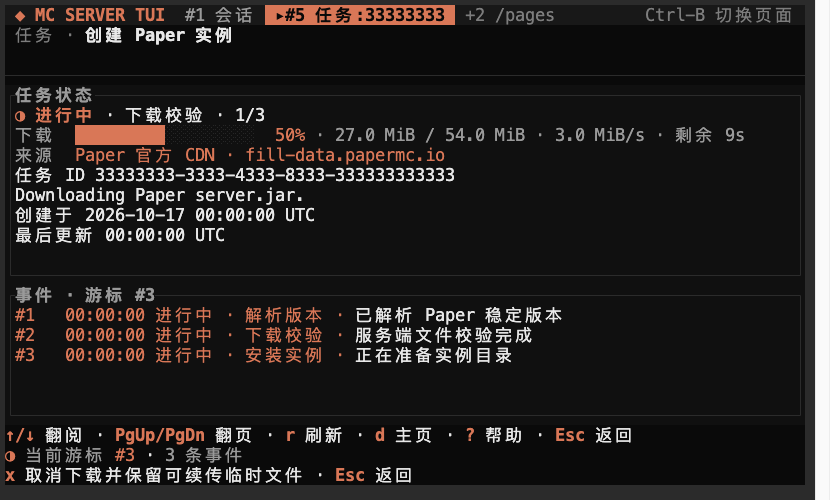

One shell. Every server.
Start, stop, tail logs, cancel a download, inspect a task, or send a console command without leaving the transcript. Drill into details only when the task needs them.
session shellA control room for Paper and Fabric servers that lives in your shell. Guide a new server from zero, watch every byte, tail the console, and restore a world without opening a web panel.

The UI is disposable.
Java keeps running when the daemon restarts.
Why it feels different
Every screen is designed around the job: get a server running, see what it is doing, and keep the world safe when something goes wrong.
Start, stop, tail logs, cancel a download, inspect a task, or send a console command without leaving the transcript. Drill into details only when the task needs them.
session shellA per-instance runner owns Java's console. Close the TUI, restart the daemon, or update the management layer; the Minecraft process keeps running and reattaches.
resident supervisorPaper builds are locked to an exact build, size, and SHA-256. Resume is only used when the source proves the range; the installed bytes are verified before they become an instance.
verified downloadsStopped-world snapshots with a checksummed manifest, paged listing, integrity verification, restore preview, explicit confirmation token, and a recovery journal.
transactional restoreDurable SQLite tasks, byte-level progress, speed and source, event cursors, and cooperative cancellation. The TUI can disconnect without losing the transition history.
durable task queueSeven near-black palettes, restrained accent color, a pixel Steve who blinks, and a Claude Code-style composer. Functional first; decoration never fights the log.
terminal UIMake it yours
Low-contrast near-black backgrounds, one accent color, and a mascot that uses the theme only for the sparkle. Switch with F2, /theme <name>, or the picker here.
Real 80×24 terminal captures, not mockups. Theme preference persists across launches.
Inside the shell
Everyday work stays in the session. The wizard, backup manager, and task detail only take over when a decision or a safe recovery needs your full attention.



Architecture
The TUI and CLI are clients. A local daemon owns tasks and supervision. Each instance has a detached runner that holds Java's stdin/stdout/stderr and a private control socket.
Get started
Install the alpha user-local, write a config, verify Java, and install a launchd/systemd user service. No browser, no root, no daemon left in a random terminal.
$ TAG=v0.2.0 $ curl -fsSL "https://github.com/JUANWANG-BUAA/mc-server-tui/releases/download/$TAG/install.sh" | sh $ mc setup $ mc
Alpha note: v0.2.0 is a pre-release, so GitHub's /latest/ URL does not select it yet. The installer checks the manifest hash and size, but not a code signature. Keep an independent world backup.
git clone https://github.com/JUANWANG-BUAA/mc-server-tui.git
cd mc-server-tui
cargo build --workspace
./target/debug/mc setup --dry-run
./target/debug/mc setup
./target/debug/mcRoadmap
The current release is deliberately narrow. We publish the gaps instead of pretending the product is finished.
Paper and Fabric lifecycle, resident runner, durable tasks, backup/restore, workspace TUI, players, pack import, properties editor, controlled restart, startup diagnosis, user service and versioned three-target releases.
shippedApple Developer ID signing/notarization, Homebrew tap, Linux .deb/.rpm and apt/dnf repositories, SBOM and changelog discipline.
nextAPI 8–11 compatibility, runner handshake, controlled restart and manual rollback are implemented. State migrations, task draining and health-checked automatic rollback remain.
partialVanilla, existing-directory takeover, broader property management, online/scheduled backups, and a real Minecraft-client join/restore drill remain.
plannedDocumentation
Read the complete bilingual guide on this site: installation, daily commands, recovery, troubleshooting, and the limits of the unsigned alpha.
The terminal is enough
Keep it in the shell, keep the world safe, and keep the browser closed.